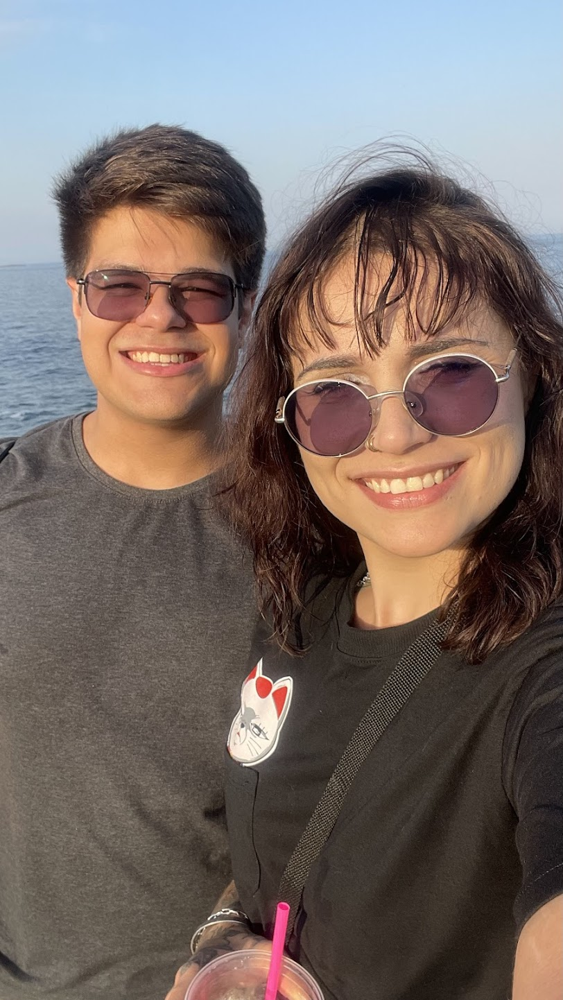

Nossos 3 Meses Juntos
Uma viagem do dia 1 de Maio até hoje... Não estão todos os momentos aqui... Mas pra isso tem a nossa galeria (que preciso atualizar... DESCULPA!)(Não foi só slide que eu montei ontem, viu?)
O Começo de Tudo
21 de abril de 2025
Num dia de semana chuvoso eu recebi o convite mais inusitado da minha vida, simplesmente a mulher mais linda do mundo me chamou pra tomar um café, e eu, obviamente, aceitei! Quem recusaria?!
Urca!
23 de Abril de 2025
Esse foi nosso "primeiro"encontro (planejado, ao menos), e foi maravilhoso, cada conversa, cada troca, cada risada, cada palavra, lembro como se fosse ontem você falando que estávamos mais "amorosos" nesse dia, e foi tudo PERFEITO! Foi o dia que casamos, né?! KKKK
O Pedido
01 de Maio de 2025
O dia em que o nosso compromisso se materializou. Você não sabe mas esse dia não foi o que eu tinha planejado, eu tinha planejado te pedir em namoro no Terra Brasilis, numa noitezinha ao som de MPB, mas você disse que queria comer comida japonesa, então fui atrás do melhor e mais bonito restaurante que eu poderia encontrar (você merece tudo do bom e do melhor), e sinceramente? Não tinha como ser mais perfeito do que foi. Nosso dia não teve 1 defeito.
Feliz 3 Meses!
1 de Agosto de 2025 E aqui estamos. Mais fortes, mais unidos e com um amor que só cresce. Que estes 3 meses sejam apenas o prefácio de um livro sem fim, de toda arte que ainda vamos desenhar e de todas as coisas maravilhosas que nós ainda vamos viver. Eu te amo infinito!
E para o futuro...
São três meses que parecem três décadas, são três meses com a intimidade de uma vida juntos, e para o nosso
futuro, eu só consigo enxergar a família maravilhosa que vamos ser (e já temos sido, um para o outro, nos
apoiando, nos amando), você é (MUITA) luz na minha vida, seu sorriso me ilumina, ilumina minha alma de uma
maneiro maravilhosa, a melhor parte de você que eu já toquei, não foi física, foi sua alma, e muito, mas MUITO
obrigado por permitir isso, e, além de tudo, obrigado por me tocar de volta, de uma maneira tão pura, no MELHOR
sentido da palavra, te amo com a pureza e a inocência de uma criança, com a intensidade de quem ama a primeira
vez, e com a maturidade de um adulto, um adulto que te ama, que cuida e zela por ti, e que fará o mesmo pela
família que vai construir com você.
Do seu eterno marido, Axl.